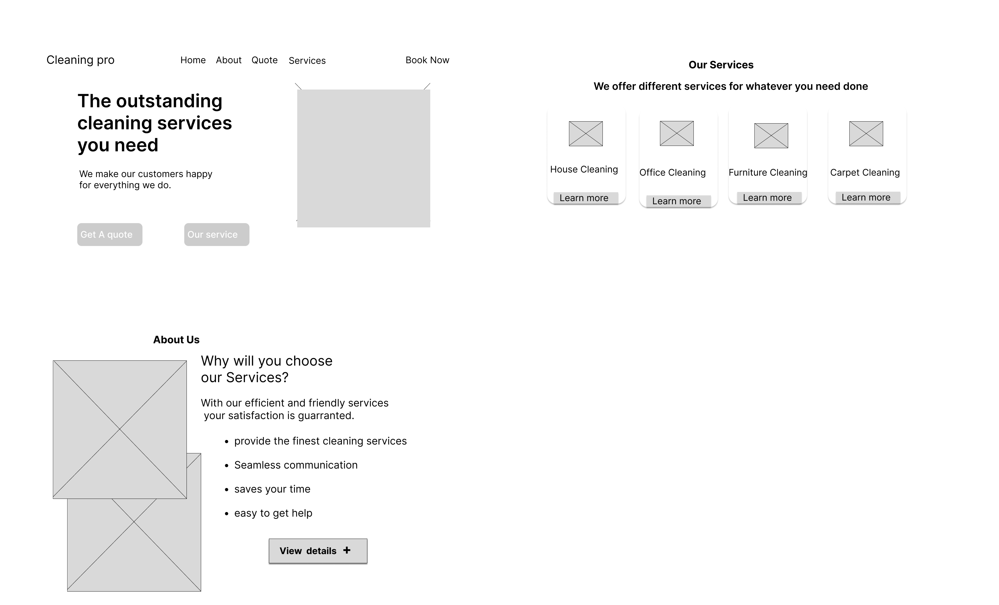

Timeline
4th Jan sep-30 March

Cleaning Pro
Platform
Web App
Web App
My Role
UI Researcher/UI Designer
UI Researcher/UI Designer
Project Overview:
The web application is a selling landing page that will tell customers about the company and its services, and will also encourage the customers to place an order
Problem Statement:
The cleaning service company currently does not have a website, making it difficult for potential customers to learn about the services offered and book appointments. This lack of online presence is resulting in decreased visibility and missed revenue opportunities for the company.The lack of a website for the cleaning service company is limiting its growth potential, and it needs to establish an online presence to remain competitive in the industry as well as create a brand.
Background
Hypothesis
By designing and developing a modern and user-friendly website for the cleaning service company, we can establish an online presence, showcase the company's services, and enhance the user experience for potential customers. This will result in increased visibility, higher engagement, and more bookings, ultimately leading to increased revenue for the company.
Business Goals
- Higher engagement: A modern and user-friendly website can enhance the user experience for potential customers, making it easier for them to learn about the company's services, pricing, and book appointments. This can lead to higher engagement and more bookings.
- Improved credibility: A website can establish credibility for the cleaning service company, making it easier for potential customers to trust the company and book their services.
- Competitive advantage: By having an online presence and a modern website, the cleaning service company can gain a competitive advantage over other companies in the industry who may not have a website or have an outdated website.
- Increased revenue: Ultimately, the business opportunity presented by the hypothesis is to increase revenue for the cleaning service company by attracting and retaining more customers through a modern and user-friendly website.
Process
Wireframes
A sneak peek into my early wireframes, mid-fidelity designs and drafts. The designs have went through at least 10 iterations per screen. It is simply to improve the user experience.
Final Designs
Here's a detailed walkthrough of the Food Mate app.